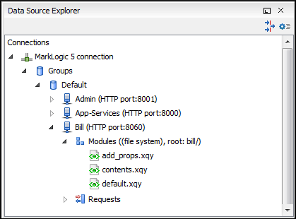

Oxygen XML Author Enterprise edition includes support for MarkLogic database
connections. Once you configure a
MarkLogic connection, you can use the Data Source
Explorer view to display all the application servers that are
configured on the MarkLogic server. You can expand each application server and view all of its
configured modules, and the Data Source Explorer view allows you to open and edit these
modules.
Note: To browse modules located in a database, directory properties must be
associated with them. These directory properties are generated automatically if the
directory creation property of the database is set to automatic. If this property
is set to manual or manual-enforced, add the directory properties of the
modules manually, using the XQuery function xdmp:directory-create(). For
example, for two documents with the /code/modules/main.xqy and
/code/modules/imports/import.xqy IDs, run the following
query:
MarkLogic connections can be used in conjunction with XQuery scripts to debug and solve
problems with XQuery transformations. XQuery modules can also be validated using a MarkLogic
server to allow to you to spot possible issues without the need of actually executing the
XQuery script.
Modules Container
For each Application server (for example: Bill (HTTP port:8060)), you have access to
the XQuery modules that are visible to that server. When editing, executing, or debugging
XQuery it is recommended to open the XQuery files from this Modules container.
Note: You can also manage
resources for a MarkLogic database through a WebDAV connection, although it is not
recommended if you work with XQuery files since imported modules may not be resolved
correctly.
Requests Container
Each MarkLogic application server includes a Requests container. In this container, Oxygen XML Author displays both queries that are stopped for debugging purposes and
queries that are still running. To clean up the entire Requests
container at the end of your session, right-click it and use the Cancel all requests action.
Figure 1. MarkLogic Connection in Data Source Explorer

 Requests container. In this container, Oxygen XML Author displays both queries that are stopped for debugging purposes and
queries that are still running. To clean up the entire Requests
container at the end of your session, right-click it and use the Cancel all requests action.
Requests container. In this container, Oxygen XML Author displays both queries that are stopped for debugging purposes and
queries that are still running. To clean up the entire Requests
container at the end of your session, right-click it and use the Cancel all requests action.